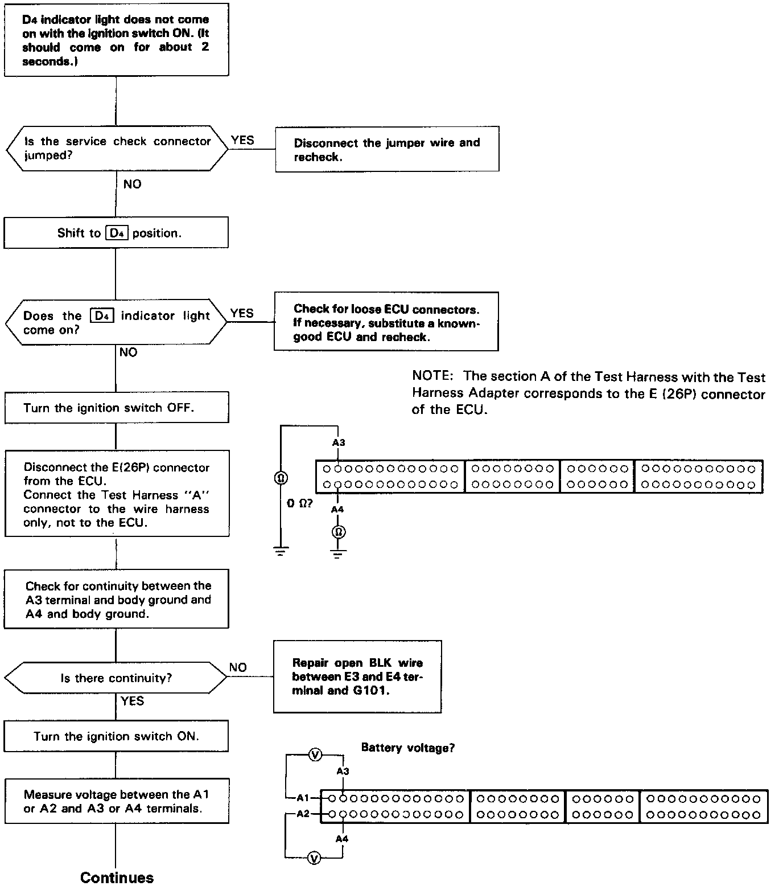
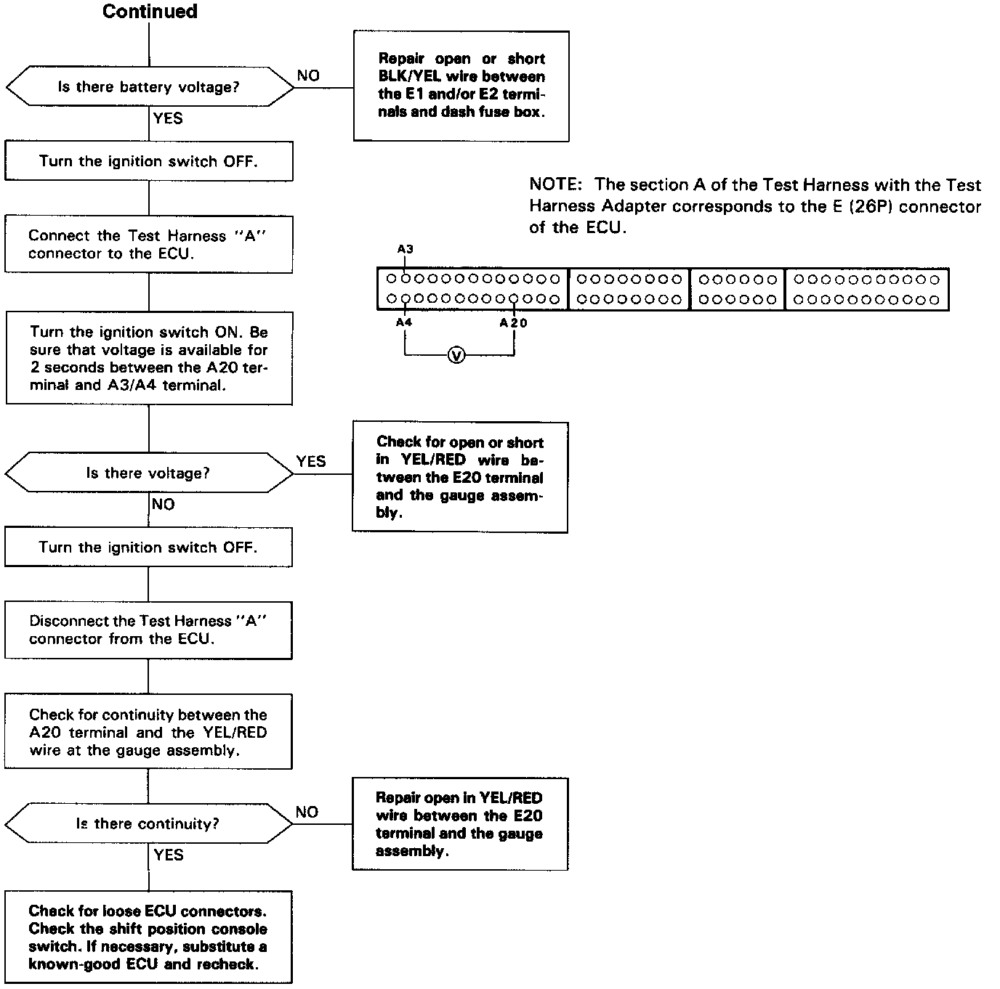

D4 Indicator Light Does Not Come ON


Troubleshooting Flowchart
D4 indicator light does not come on with the ignition switch ON. (It should come on for about 2 seconds.) / Inspection of self-diagnostic indicator circuit.

